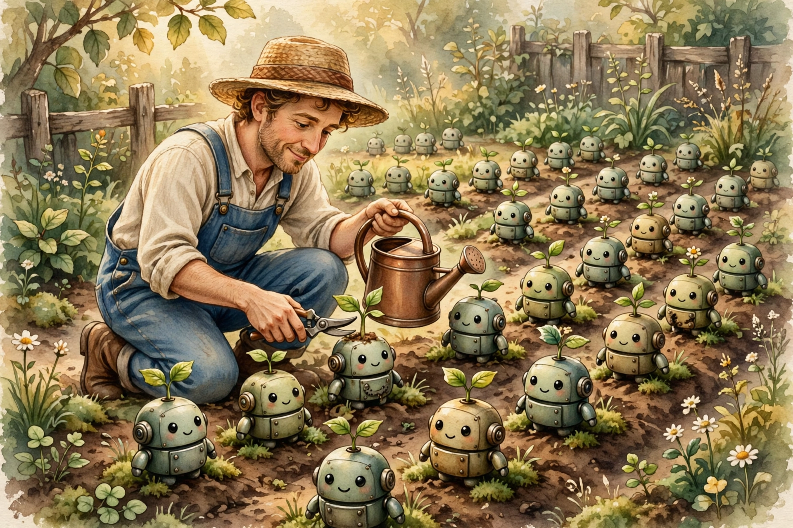

The Loop That Watches the Loop
Ben Holmes runs Warp's agent factory. He splits the work into two loops: the inner loop, where a team of agents builds the product, and the outer loop, where a team of supervisors watches those agents and makes them better. Most teams only run the first loop. The ones that run both compound.

1. Two kinds of engineering
Holmes draws a line between product engineering and factory engineering. Product engineering improves the product. Factory engineering improves the agents that improve the product. He credits the gardening metaphor to poteto: you do not grow plants by yelling at them. You improve the conditions and let growth happen.
His framing: the inner loop is your team of agents building everything. The outer loop is your team of supervisors and gardeners watching over those agents, spotting room for improvement. The best companies, he argues, will design for both loops at the same time.
2. The diagram, but tappable
His whiteboard sketch has two cycles. The inner loop ships the product in eight steps. The outer loop runs every 24 hours in four steps, watching the inner one. Tap any node to see what happens there.
Tap a node
3. What the outer loop actually does
At Warp, the outer loop is not a meeting. It is agents watching agents. One batch of agents scores agent conversations on rubrics like efficiency (did it waste tool calls?) and code quality (did it write excessive tests?). Then, on a schedule, another agent reviews the low scorers and proposes improvements to the team's skills. The proposals get merged, and the scores tell you whether the change helped. It is a feedback loop with a memory.
The example from his post: five conversations all wrote redundant tests. That is not five problems, it is one problem. The fix was a skill update:
+ ## Coverage pyramid
+ When to add unit vs. integration tests...
Try it yourself. Four agent conversations from yesterday. Two of them have a bad habit. You are the outer loop: flag the ones you would send back for retraining, then run the loop to see if you agree with the machine.
Auth refactor
Login form
API endpoint
Checkout flow
Tap cards to flag the wasteful ones, then run the loop.
4. Old wisdom in new clothes
The two loops are everywhere once you look.
The garden. Gardeners do not photosynthesize. They fix the soil, the water, the light, and pull the weeds. The plants do the growing. Your agents are the plants. Your skills, rubrics, and guardrails are the soil.

The coach. Players run the plays. That is the inner loop, and it happens on game day. Coaches watch tape at midnight, circle mistakes in red, and redesign Tuesday's practice. That is the outer loop. No team wins with only one of them. Holmes is literally asking who else is setting up supervisor agents. He is hiring coaches.
The roguelike. Gamers know this one by heart. Each run is the inner loop: you play, you die, the run ends. The outer loop is the meta-progression between runs: better gear, unlocked shortcuts, a stronger character. The run does not get easier. You get better at running. An agent team with no outer loop is a roguelike with no meta-progression: every run starts from zero, forever.
The kitchen. Line cooks fire dishes all night. That is the inner loop. The chef sharpens the knives, rearranges the stations, and writes the prep list. That is the outer loop. A dull knife slows down every single dish, and no amount of faster cooking fixes a dull knife. Most teams try to cook faster. Holmes sharpens the knife.
5. The math of compounding
Here is why the outer loop matters more than it looks. A 3% improvement sounds like nothing. But the outer loop applies to every future inner loop. Drag the slider and watch what small, repeated improvements do over 30 outer-loop cycles.
Each bar is one cycle. The outer loop does not add speed, it multiplies it. This is the whole game.
6. Steal this for a team of one
You do not need a factory to run an outer loop. Once a week, read your own agent transcripts and ask two questions: where did it waste tool calls, and where did the code come out worse than you would write? Keep a SKILL.md of what you learn, the way Warp does. That file is your soil. Score next week's conversations against it. You are the gardener now.
Holmes wants to add more outer loops next: code architecture review, abstraction checks, static analysis as guardrails, in his words, to stop bad code viruses from spreading. The inner loop writes the code. The outer loop decides what kind of code the team writes. Design both.
The inner loop builds the thing. The outer loop builds the builder. Guess which one compounds.